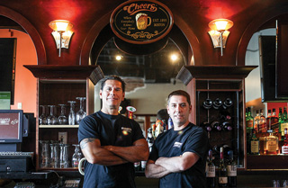

Testimonials
Your satisfaction is our top priority!
Even those stuffy restaurant critics can't resist our charms. Here's a sampling of what they've said about Spaghetti and Cruft.
Spaghetti & Cruft offers tasty, wood-fired pizzas at affordable prices, served in a hip, relaxed atmosphere. Comfortable seats, free WiFi, and abundant power outlets make this
a popular spot for the neighborhood technophiles to linger with their laptops.
-- Gotham Examiner, October 10, 2015
Nestled between a prominent web design consultancy and a bicycle repair shop, Spaghetti & Cruft is a neighborhood favorite.
-- Jessica Spengler, Principia Gastronomica
Our quest ended at Spaghetti & Cruft, a great little pizza joint on the west side of Cederholm. Brick walls, a brick oven, and a safe place to plug in my iPad. They even graciously accommodated
Leslie's onion allergy. Highly recommended.
-- Geeklog, September, 2015